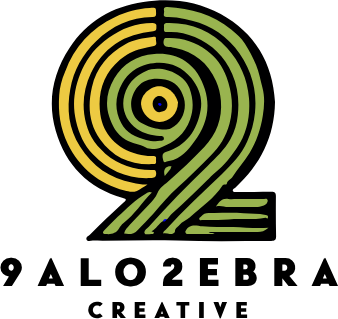

Tecnología
AI Operations
Una arquitectura de agentes de IA que convierte información distribuida entre herramientas, documentos y comunicaciones en contexto continuo, seguimiento y acciones sugeridas.

Palozebra / Showcase
Trabajo real, prototipos y proyectos organizados por los cuatro pilares de Palozebra: diseño, tecnología, música y marketing.
Una arquitectura de agentes de IA que convierte información distribuida entre herramientas, documentos y comunicaciones en contexto continuo, seguimiento y acciones sugeridas.
Un prototipo conversacional que guiaba al usuario para preparar un contrato de arrendamiento y recibir el PDF dentro de Telegram.
Identidad visual desarrollada para una empresa de moda de Guayaquil a partir de un concepto inspirado en la mascota del dueño.
Desarrollo de identidad y logotipo para una empresa de alquiler de vestidos.
Trabajo de producción, distribución y marketing para proyecto musical.
Distribución y apoyo de marketing para proyecto musical.
Producción, distribución y marketing para artista.
Landing pages, sitios tipo tarjeta de presentación, portafolios, catálogos digitales y páginas para eventos.
Trabajo en email marketing, publicidad digital, SEO, conversión y acompañamiento para marcas y proyectos.